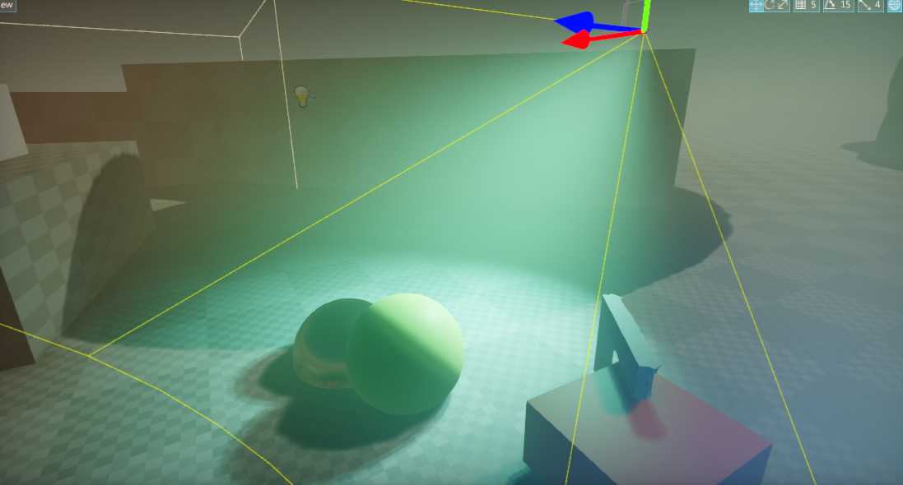
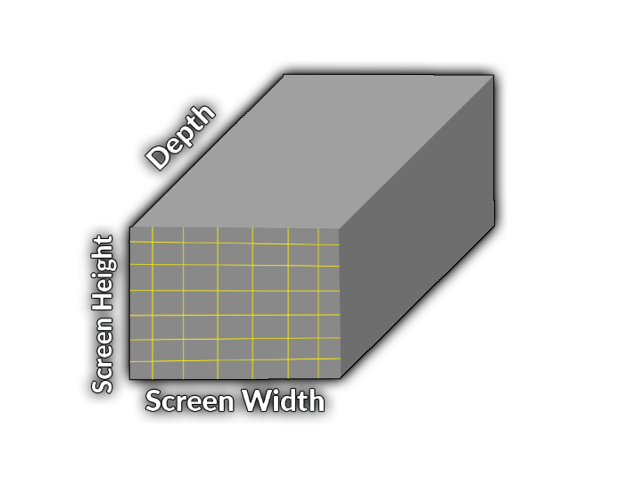
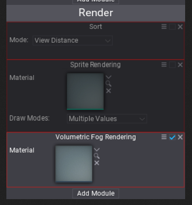
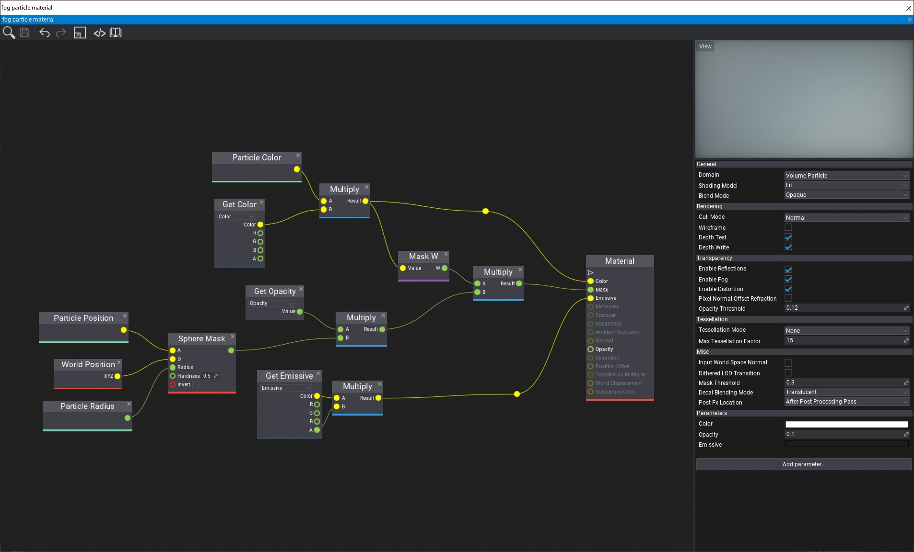

Volumetric Fog

Volumetric Fog is a rendering feature that simulates the light transmission through the scene that contains fog (dust, smoke, particles, steam, etc.). The effect itself is implemented using a set of 3D textures (volume textures) that are attached to the camera and are used to compute the per-cell fog particle density, albedo, and lighting. This information is used to estimate the amount of light scattering through the volume to the camera. This results in realistic-looking fog and gives the very good performance-quality ratio.
Technical aspects
- Target PC + Consoles
- Requires 3D Textures + Compute Shaders
- ~1.1ms (on GTX 840M - Witcher 3 runs stable 21 FPS on it)
- Low-res sampling + Temporal filtering
- Local fog particles density and color
- Volumetric shadows
Algorithm
- 3D texture aligned to camera frustum
- Voxels (3d texels) store data per world-space cell
- Supports hardware filtering
- Low resolution 3D texture (e.g. 150x80x64)
- Outputs 3D texture with accumulated lighting and transmittance

Algorithm steps:
- Initialize volume properties
- Writes fog attributes into the set of two 3D textures:
- Scattering.rgb, Absorption.a – R16G16B16A16
- Emissive.rgb – R11G11B10
- Use volume particles to modify fog locally (eg. steam coming out of pipe)
- Lights Injection
- Calculate per-cell diffuse lighting (use HDR format R11G11B10, can use shadow maps)
- Light Scattering
- Calculate scattering and extinction
- Apply temporal blend (~7% blend current frame with the previous)
- Final Integration
- Integrate along the view ray (the one moment in your life when you actually use ∫f(x)dx)
How to use it
Use Exponential Height Fog actor and enable Volumetric Fog option. Then you can adjust its density and other parameters. Also, every light can affect the fog by adjusting the Volumetric Scattering Intensity value and Cast Volumetric Shadow option.
Showcase

Local Fog via Volumetric Fog Particles
Exponential Height Fog actor controls the global properties of the fog on the scene such as Albedo, Density, and Emission. To create local-fogging effects such as smoke, dust or mist use particles with Volumetric Fog Rendering module.

Ensure to assign the material shader to the material created with Volume Particle domain. Then use Color input to define th albedo color of the fog, Emissive input for light emission and Mask with Opacity to define the fog particle shape (eg. use world-aligned noise texture to add more realistic look to the fog).

Volumetric Fog Particles are rendered using Sphere shape so use per-particle Radius property to control the size of the particles.